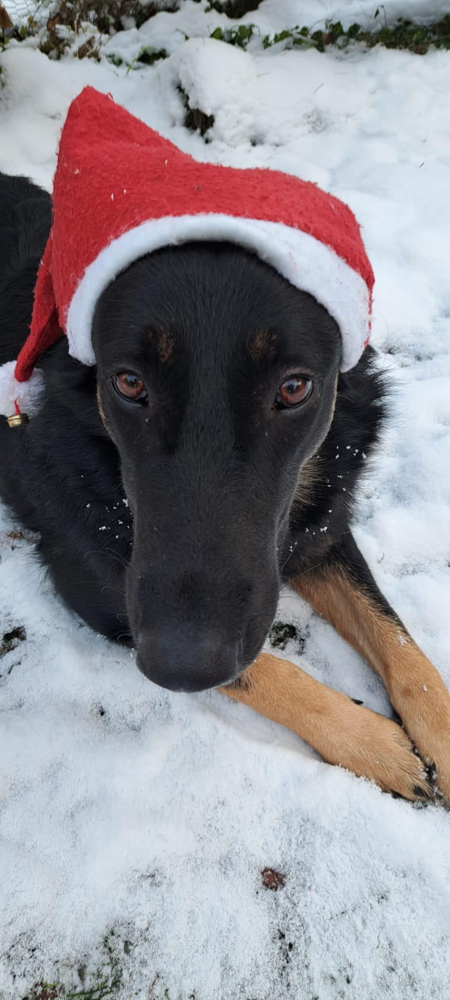

Willkommen bei Weihnachtswusch
Es war einmal ein kleiner Weihnachtswunsch, der flog im Weltraum hin und her, um die Kinder am Weihnachtsabend zu beschenken. Auf dem langen Flug zwischen all den Galaxien verlor er ein „n". Er eilte zur Erde, um dort nach seinem verlorenen „n" zu suchen.
In der Weihnachtsnacht kehrte der Weihnachtswu(n)sch in ein warmes Haus ein, um sich aufzuwärmen. Als er durch das Haus schlich, wurde er von einem kleinen Jungen entdeckt, der ihn für den Weihnachtsmann hielt. Der Wusch begann von seiner langen Reise zu erzählen und klagte dem Kind sein Leid, dass er sein „n" sucht und es wiederfinden muss. Da lächelte der Junge und sagte nur: „Sei nicht traurig, du kannst auch ohne das „n" glücklich sein und ab heute heißt du für mich einfach „Weihnachtswusch".
Da freute sich der Weihnachtswusch und war überhaupt nicht mehr traurig über sein verlorenes „n". Er verließ gut gelaunt das Haus und begann, Weihnachtslieder durch die Nacht zu trällern.
